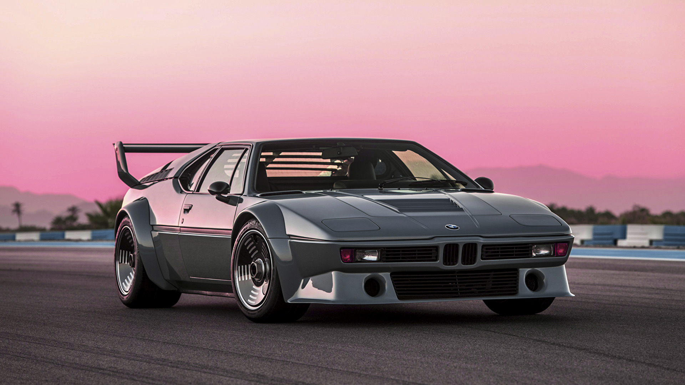

BMW M1 (1978-1981) - Ikka veel legend
Toodetud: 1978–1981
Toodetud ühikud: Ligikaudu 450
Kirjeldus: BMW M1 on keskmootoriga sportauto, mille disainiti koostöös Lamborghini'ga. Tuntud oma unikaalse disaini ja piiratud tootmismahu poolest. M1 oli BMW esimene keskmootoriga massiliselt toodetud mudel ning see on siiani üks ikoonilisemaid ja haruldasemaid M-seeria autosid. Sellel autol on suurepärased sõiduvõimed ja kõrge väärtus, kuna tootmiskogus oli väga piiratud.
 Tagasi Blogisse